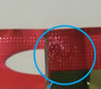
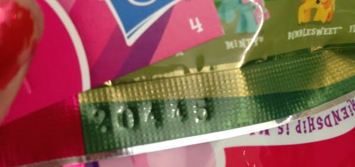

Brony MLP Blind Bag Guide
Blind bags are small bags that contain 1 mini pony per bag.
They do not indicate by name which pony is in which bag because it is meant to be a surprise.
For those that hate surprises, the bags also have a number printed on them that allows you to figure out which pony is in which bag.
Numbers can either be 1-2 digits or 5 digits.
For five digit numbers, just ignore the 1st, 3rd and 5th number and have the original index number.
For instance, number 20415 is really just #01 or #1, and 22445 is just #24.


Wave 8 no longer printed number codes,
but instead has 2 digit letter codes stamped right below the 'www.mylittlepony.com' print on the front of the bag.
The codes are AA-AZ, minus AJ and AQ.